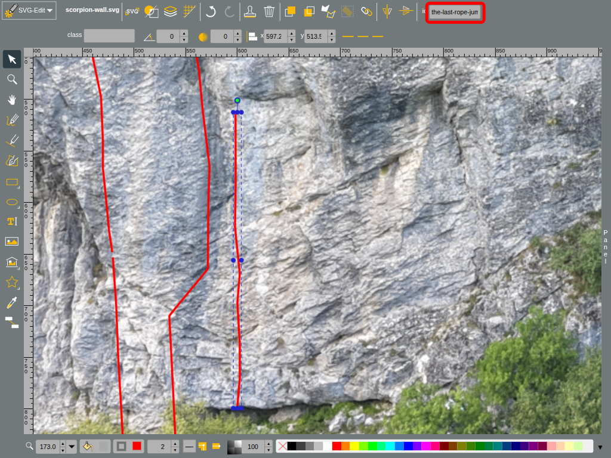

Choose a sector below and click its name to open the sector RST file. Add the route in the correct position: routes are listed from left to right, matching their positions on the topo. Tip: Copy an existing route entry and update it with the new route's details. Download the edited RST file.
Click the sector's topo SVG file. It opens in SVG-Edit with the topo already loaded. Use the Path tool to draw the new route line.
Select the new path and set its ID to the route name in lowercase, with spaces replaced by hyphens. For example, the ID for "The last rope jump" is the-last-rope-jump.

Download the edited topo SVG file and keep its original filename.
Send the downloaded RST description file and SVG topo file to the guide maintainer.